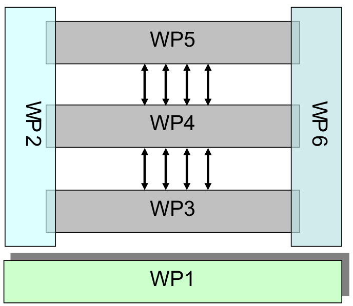
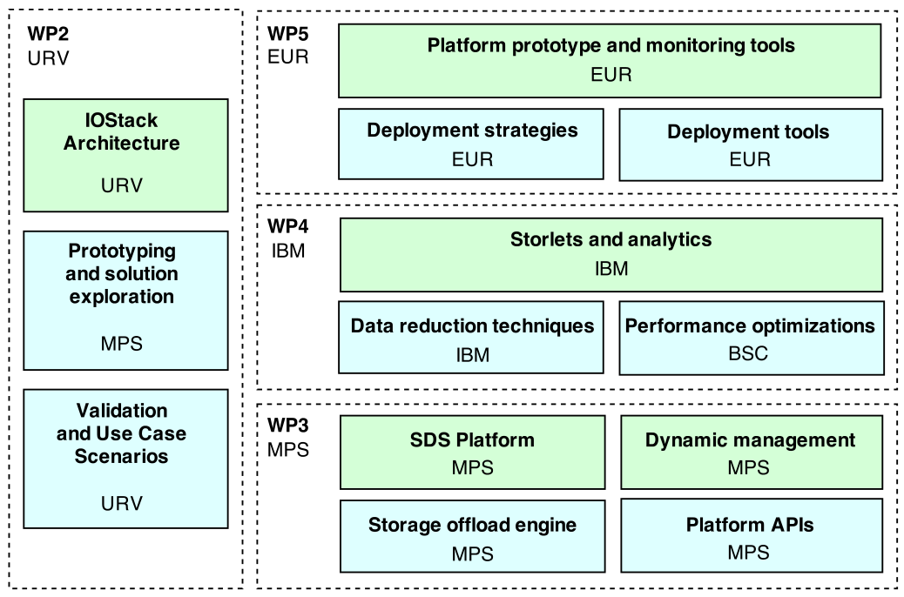

About the project
| Project title | IOStack: Software-defined Storage for Big Data |
| Project code | H2020-644182 |
| Project coordinator |
Dr. Pedro García López |
| Partners |
Universitat Rovira i Virgili (ES) |
| Duration | January 2015 – December 2017 |
Overall strategy and general description
The main objective is to create IOStack: a Software-defined Storage toolkit for Big Data on top of the OpenStack platform. IOStack will enable efficient execution of virtualized analytics applications over virtualized storage resources thanks to flexible, automated, and low cost data management models based on software-defined storage (SDS).
IOStack is structured in six work packages. With the exception of WP1 (dealing with the overall man- agement of the project) and WP6 (dealing with the dissemination, exploitation and standardization activities), all other work packages have a technological and scientific justification.

As we see in Figure 1, the structure of IOStack follows a layered approach. There exist bidirectional dependencies between technical work packages closing the feedback loop among layers, namely WP3, WP4 and WP5. WP6, which deals with all the dissemination related issues, and WP2, which ensures the necessary consistent cross layer research, are transverse to WP3, WP4 and WP5.
WP1 (Management) has three main tasks: Project Management, Scientific Coordination and Risk Assessment. This work package, led by URV, takes care of the overall management and reporting issues of the project, guarantees quality assurance and risk assessment, and it is the place for scientific coordination.
WP2 (Architecture) has three tasks: Architecture, Prototyping and Validation. T2.1 (Architecture)will steer the requirements and specifications of the IOStack toolkit integrating the work of all WPs.T2.2 (Prototyping) will create early prototypes to produce feedback on actual usage in the wild Internet. Finally, T2.3 (Validation) will define from the onset of the project the validation and benchmarking framework.
WP3 (SDS Toolkit) has four tasks: T3.1 (SDS Platform for Data Analytics) allows the physical infrastructure to be mapped to a logical SDS model. T3.2 (Dynamic management of storage pipes) will use the knowledge of the physical infrastructure to connect the storage array volumes to the compute VMs across the best fabric connection for the particular analytics task. T3.3 (Storage offload engine) adds storage processing capability to the storage array. T3.4 (Platform APIs for Data services) will standardize open APIs for data services that may be deployed in the SDS toolkit. /p>
WP4 (SDS services for analytics) has three tasks: T4.1 (Storlets for Analytics) will provide an implementation of Storlets in the Object Store along with appropriate interfaces. T4.2 (Data reduction Techniques) will explore the ability to manage data reduction deployment in an object storage cluster in a way that is suitable for data analytics. T4.3 (Performance optimizations)will try to optimize the performance of big data flows using different techniques like intelligent prefetch, persistent caches, or intelligent filtering.
WP5 (Big Data Analytics as a Service) has three tasks: System Performance Monitoring, System Deployment Strategies and System Deployment Tools. T5.1 (System Performance Monitoring) aims at producing the necessary software infrastructure to continuously monitor the IOStack system state. T5.2 (System Deployment Strategies) deals with the formal problem of defining a system model and use it to produce analytics as a service deployment strategies. Finally, T5.3 (System Deployment Tools) targets the design and implementation of a software module that instantiates deployment strategies derived in T5.2.
WP6 (Dissemination) has three tasks: Communication plan, Dissemination, and Exploitation & standardization. T6.1 (Communication plan) will prepare a roadmap for project dissemination in order to achieve media exposure and reach big user communities. T6.2 (Dissemination) will take care of all dissemination activities during the project as detailed in the communication plan. Finally, T6.3 (Exploitation & Standardization) will try to push final project results in the third year in big user communities and standardization groups.

As we can see in Figure 2, we follow a stack architecture where each core WP builds on top of the other. In this line, WP3 will offer APIs that will be used in WP4 to implement SDS services for analytics and performance optimizations. WP5 closes the feedback loop by monitoring resources in the deployment platform, and benefiting from data services and provisioning APIs to better design deployment policies. This integrated architecture is nicely complemented by the transversal WP2 where use cases will validate project results using a variety of workloads.